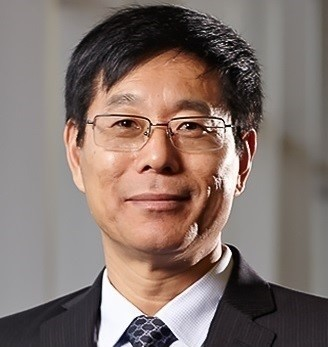

Driving the Future of Transport: Communication-Efficient and Cyber-Secure Coordination Control
Distinguished Professor Qing-Long Han, FIEEE, FIFAC, FACA, HonFIEAust, FCAA
Member of the Academia Europaea (The Academy of Europe)
Pro Vice-Chancellor (Research Quality)
Swinburne University of Technology, Australia
Melbourne, Victoria 3122, Australia
Email: qhan@swin.edu.au
Abstract: The evolution of intelligent transportation systems hinges on the seamless integration of connected and automated technologies, yet challenges in communication efficiency and cybersecurity remain critical barriers to their widespread adoption.
This Keynote Address explores innovative solutions to drive the future of transport, focusing on two pivotal research domains: communication-efficient coordination control and cyber-secure coordination control for connected automated vehicle (CAV) platoons and connected railway systems. The Keynote Address begins with a concise overview of connected automated transport, followed by an in-depth exploration of key design and implementation challenges in such systems. Novel event-triggered coordination control strategies that dynamically schedule vehicle-to-vehicle and train-to-train communication are then presented, enhancing communication resource efficiency by reducing unnecessary data exchanges while preserving precious bandwidth resources. These mechanisms adapt to real-time network conditions, ensuring efficient platooning for CAVs and virtual coupling for railways. Additionally, resilient and secure control techniques designed to withstand, detect, and mitigate cyber threats are discussed, safeguarding the integrity of networked transportation systems against various cyber-attacks such as denial-of-service and data falsification and replaying. Drawing on theoretical advancements, simulation results, and practical implications, this speech highlights how these advancements pave the way for a safer, more efficient, and resilient transportation ecosystem, addressing the pressing demands of future mobility. Finally, concluding remarks are drawn and some emerging challenges in the field are envisioned.

Professor Han was awarded the 2024 IEEE Dr.-Ing. Eugene Mittelmann Achievement Award (Highest Achievement Award in Industrial Electronics), the 2024 Chinese Association of Automation (CAA) Science and Technology Achievement Award (the CAA’s Highest Achievement Award in Automation, Information and Intelligent Science), the 2021 Norbert Wiener Award (the Highest Achievement Award in Systems Science and Engineering, and Cybernetics), and the 2021 M. A. Sargent Medal (the Highest Achievement Award of the Electrical College Board of Engineers Australia). He was the recipient of the Journal of Systems Science and Complexity Best Paper Award in 2023, the IEEE Systems, Man, and Cybernetics Society Andrew P. Sage Best Transactions Paper Award in 2019, 2020, and 2022, respectively, the IEEE/CAA Journal of Automatica Sinica Norbert Wiener Review Award in 2020, the IEEE Transactions on Industrial Informatics Outstanding Paper Award in 2020, and the IET Control Theory and Applications Premium (Best Paper) Award in 2020 and 2016, respectively.
Professor Han is a Member of the Academia Europaea (The Academy of Europe). He is a Fellow of the International Federation of Automatic Control (FIFAC), a Fellow of the Institute of Electrical and Electronics Engineers (FIEEE), a Fellow of the Asian Control Association (FACA), an Honorary Fellow of the Institution of Engineers Australia (HonFIEAust), and a Fellow of the Chinese Association of Automation (FCAA). He is a Highly Cited Researcher in both Engineering and Computer Science (Clarivate). He has served as an AdCom Member of IEEE Industrial Electronics Society (IES), a Member of IEEE IES Fellows Committee, a Member of IEEE IES Publications Committee, Chair of IEEE IES Technical Committee on Network-Based Control Systems and Applications, and the Co-Editor-in-Chief of IEEE Transactions on Industrial Informatics. He is currently the President-Elect, an Executive Board Member, and a Steering Committee Member of the Asian Control Association (ACA). He is currently the Vice-President of the Chinese Association of Automation (CAA). He is currently the Editor-in-Chief of IEEE/CAA Journal of Automatica Sinica.